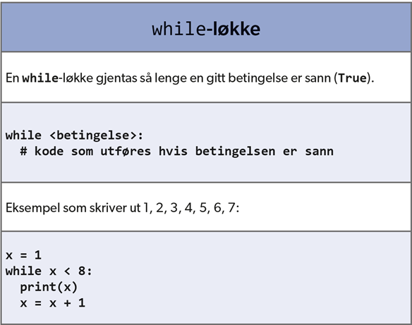
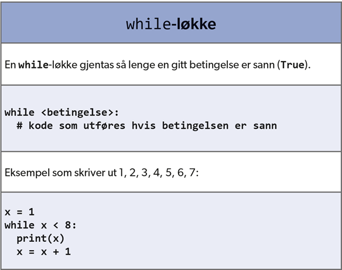

Litt videre: vilkår, løkker og funksjoner
Vilkår (valg-setninger)
Vi trenger valg-setninger i kode, til å ta beslutninger og / eller situasjonsbetingede hanslinger. Hvordan virker dette? Hvis en betingelse er tilfredsstilt,
utføres handling (en eller flere kodelinjer) eller utføres den ikke. Deretter fortsetter kode som står bak valg setning(ene). Se på flytskjema nedenfor
til venstre.


Noen få eksempler om hvordan du kan skrive valg-setninger inn i kode (syntax), finner du i boks ovenfor til høyre. Legg merke til kolon etter betingelse og
inrykk etter kolon (Python syntax)!
I betingelser blir ofte relasjonsoperasjoner brukt, for eksempel +, -, *, /. En anne mulighet er å sammenligne to tall (eller aritmetiske
uttrykk som resulterer i tall) eller tegn, tekster og boolske variabler (TRUE eller FALSE). Nedenfor blir de forskjellige relasjonsoperasjoner
presentert. Det er også mulig å kombinere betingelser med logiske uttrykk OR, AND og NOT.

Løkker (while)
En While-løkke er det vi kaller en tilstandsløkke. Den kjører helt frem til en logiak tilstand ikke lenger er oppfylt. Se på flyttskjema
nedenfor til venstre. Legg merke til Python syntax!
 

Løkker (for)
En for-løkke er en løkke som gjentar kode. Den er vanlig å benytte samtidig med range-funksjonen for telling, eller i kombinasjon med
en liste for å iterere over elementer i lista. Hva skjer når en skriver kode som skriver ut tallene 1 til 5? Variabelen num får
verdier fra lista, element for element, for hver runde løkka kjører, se figur nedenfor helt til venstre.


I middelst figur ovenfor blir sammenligningen av range og liste presentert. I figuren til høyre står Python syntax for for-løkke.
Funksjoner
En funksjon er en blokk med kode som blir utførst når den kalles på. En funksjon kan ta ingen, én eller flere parametre som input, og returnere ingen,
én eller flere variabler som output.
Bruk av funksjoner fører til mer struktur i kode, deler program opp i mindre
deler. Da blir kode lettere å forstå, enklere å teste og fører til mer effektiv samarbeid. Det blir mye enklere å gjenbruke kode,
enklere å dele kode eller definere nye funksjoner. Det er mulig å bruke funksjoner flere sted i ett program. Et eksempel finner du i
figur nedenfor.

Legg merke til kommentar (etter # i kode). Her blir forklart hvordan funksjonen er bygget opp.
Tilbake til kurs for lærere